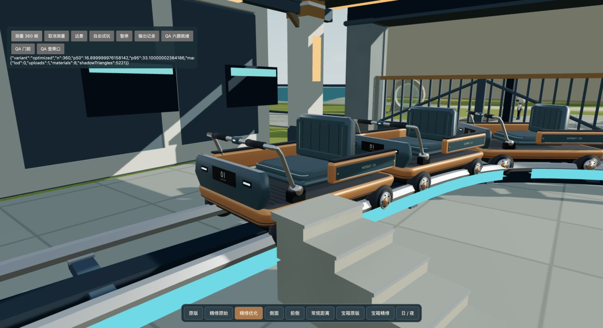

同机位近景：原始精修 191 次提交 → 优化版 153 次，旧低模版 149 次。1710×931、DPR 1、balanced，未改变场景灯光或曝光。
| 360 帧采样窗口 | 中位 ms | P95 ms | 场景提交 |
|---|---|---|---|
| 优化近景（日） | 17.0 | 29.1 | 153 |
| 旧版近景（日） | 17.4 | 38.1 | 149 |
| 原始精修近景（日） | 17.6 | 33.4 | 191 |
| 优化近景（日，复测） | 16.9 | 33.1 | 153 |
| 优化近景（夜） | 17.1 | 34.4 | 154 |
| 优化远景（日） | 16.6 | 28.0 | 261 |
| 原始精修远景（日） | 17.6 | 35.5 | 298 |
| 优化行驶（约 13～20 秒） | 16.7 | 16.9 | 81 |
| 优化行驶（约 73～80 秒） | 16.7 | 17.1 | 94 |
这是本机局部验收。静止窗口仍有偶发慢帧，运动窗口随视角变化；不代表全世界、所有设备稳定 60fps。完整 114 秒行程已结束，暂停时渲染帧计数与行程时间均停止。
下图为优化后实际网页近景。
